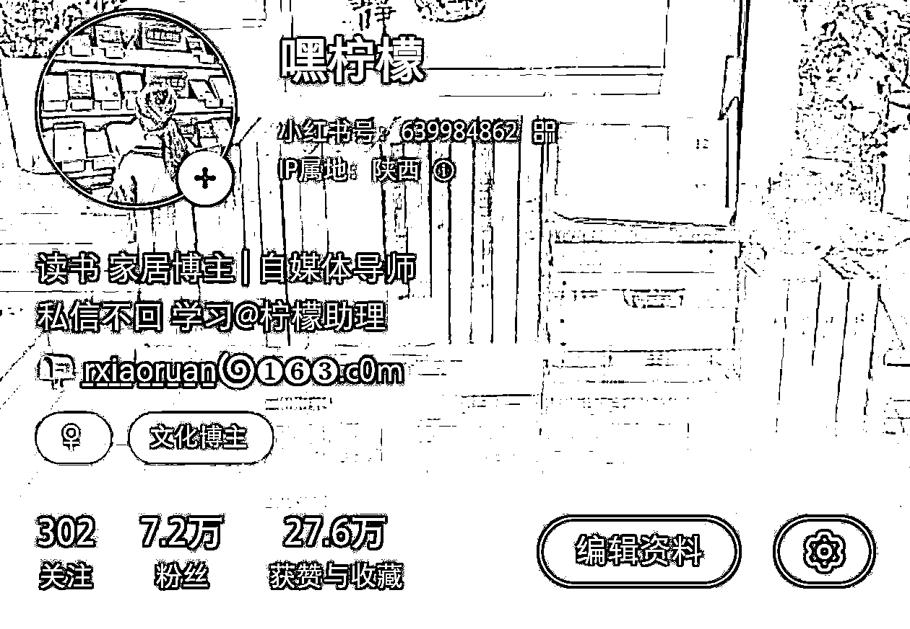

来源：https://ccn8e4v677xb.feishu.cn/docx/Rj4kdlz62oKh9axQyVNcSbLxnXd
大家好，我是柠檬。很高兴加入生财，和大家一起学习交流，这是我的第一次分享，先跟大家介绍一下我自己吧~
目前，我是一名小红书全职博主，再过两个月，我将迎来我的30岁。古人说，三十而立，如今不靠原生家庭能在30岁立起来的，大概没有多少。
但对我来说，在即将迈入30岁的档口，我能够确定的是：我的30岁将是“不惑”的。
2021年初，女儿一岁半，我开始不断尝试做自媒体，起初定位的平台就是大家熟知的抖音，我拍视频、剪辑、配音，打得火热，一番折腾下来，却没有折腾起多少水花。于是，我转战小红书，尝试过美食、母婴亲子、女性成长和穿搭，最终，定位在读书赛道。
但当时，我只是一个并没有认真读过几本书的“新晋读书人”。好在我的本职工作——新媒体运营，还有从小就热爱的写作给了我辅助，不到一个月的功夫，我涨了三千粉。也开始慢慢接到合作，有了稿费。但这些稿费并不足以支撑我的生活日常，我还是选择回到了职场。
在职场的小半年里，我白天上班，利用午休时间写稿，晚上哄睡完孩子，继续起来完成读书和拍摄。那段时间，我恨不得把自己掰成三份，直到做博主拿到的稿费超过了本职工作，我裸辞了。
直到现在，我依然没有重回职场，未来也不会有这个打算。如今，大家把这种没有固定工作模式，且不用坐班的工作称之为“自由职业”。
于我而言，它更像不同维度的“铁饭碗”，我可以选择在任何地方开始和结束手上的工作，而且只要我还在输出，就永远不会失业。没有什么KPI，不用忍受领导的PUA，也不用处理复杂的同事关系。
经过这几年的打磨，也有了一些小成果——全网粉丝10万+，成功打造个人IP读书博主、家居博主账号，靠小红书变现50万。
如今，我每天工作4小时，其他时间都可以用来发展爱好，实现了利用30%的时间去谋生计，70%的时间享受生活，真正把副业做成了能够维持生计的主业。
很庆幸，是这一切都是自媒体带给我的。

（小红书读书账号展示，可以去小红书自行搜索查看）
接下来就跟大家聊一聊我的具体操作步骤~
首先是确定赛道，因为赛道决定这个账号接下来的走向，选好了赛道，就等于确定了核心内容。我最初之所以选择了读书赛道，是因为这个赛道是门槛相对较低的赛道，没有什么技术含量，也不需要额外学习太多其他技能。会读书，并且能够把读过的内容归纳总结为一篇800字的笔记就够了。
选好了赛道，接下来就是实战内容了。像我做的是读书赛道，日常就发跟读书相关的内容，可以往宽了发，分享读书日常、书桌布置、阅读方法、运营经验、干货总结，这些都可以发。但不能往偏了发，比如又去分享育儿知识，个人vlog，母婴，这些跟读书八竿子打不着的内容，就不要出现在这个账号里面了。
赛道要足够垂直，才能精准吸粉，总结下来就是：你是什么样的人，才能吸引什么样的人。
确定了赛道，接下来要做的就是选题，一篇爆文笔记，往往在选题上就赢了一半，其次才是内容。选题决定用户是否点进来观看，内容决定用户是否停留，主页决定用户是否关注。所以把握住了选题，等于把观众引进了门，这一点至关重要。
要做出爆款选题，首先要知道这类笔记长什么样，没有捷径，能做的就是多看多写，勤能补拙。直接在首页搜索同赛道的热门笔记，去提取核心点，能用的拿来转化成自己的语言表达出来。写得多了，对话题的敏锐度自然也就上去了。
很多人做账号有一个误区，觉得一定要准备好再去做。书桌美感度不够，先买摆件；手头上的书不够，先买书……甚至还有人觉得一定要家里足够漂亮才能做家居博主，殊不知大家都是先做了博主，才把家里改造美的。但凡是先做准备工作再去上手做账号的，要么是浪费了许多时间，磨灭了热情；要么被自己难倒，直接放手不做了。
其实，永远没有准备好的时侯，觉得不够完美的话，先去完成再说，边做边优化。而且在尝试的过程中，也是养号的过程，账号是跟着博主一起成长的，不分先后。
所以，没有什么起号的方法，都是边做边摸索，根据数据反馈去及时做调整和内容优化，起号拼的就是行动力和优化调整的举措，掌握了这两点，轻松起号。
昵称：以简洁好记为主，或者体现出你做的赛道，比如“xxx的小书屋/书房/书桌”
头像：头像要和主页风格协调，尽量使用真人照，可以增强真实感和信任度（可以跟我一样使用背影图）
背景图：最好能够体现出你的账号风格，比如我是读书领域，所以背景图就用了一张氛围感书桌
简介：写出我是谁——拿得出手的学历/职业经历/优点特长
这个账号是做什么的——分享书桌/读书日常/家居布置/收纳整理
联系方式：简介里一定要把邮箱带上，方便品牌方联系沟通合作（目前小红书邮箱不能直接留，会检测到违规，可以跟我一样换一种形式去留）
刚开始写笔记的时候，请记住一点：
不要把小红书当做你的朋友圈去发，没人愿意听你的碎碎念。这是一个公共平台，有深度，有价值的内容才会被关注。更不要想着我做账号就是为了展现自己，我就要做我自己，在哪里都能做自己，没必要在这里做。
抛开自己后，你需要了解小红书这个平台的爆文长什么样。
怎么去找爆文？
直接搜索关键词，你做什么领域就去搜什么领域相关的关键词，比如读书、书桌、书房、读书角、做读书博主、阅读、书单等等一切你能想到的关键词，都可以去搜出来看看。
接下来就是写笔记。
新手写笔记，就一个字——抄，当然了这个“抄”也是有技巧的，不是说直接去抄袭，把别人的笔记原封不动的抄过来，这样肯定是不行的，而且平台还会判违规。
怎么去抄才是正确的，而且又能不被平台检测到？
那就是去模仿爆文的呈现内容，具体体现为它的封面、标题、文案结构和关键词
“抄”标题
做自媒体久了你就会发现，一段时间内，容易火的也就是那几个关键词，关键词确定了，那么内容的大致方向也是区别不大的。从爆款标题里提取几个能够为你所用的关键词，那么你的标题就出来了。
“抄”主图
一篇笔记能否被用户点进去，需要标题和主图相辅相成。
如何看爆文的主图，首先要看它的风格和构图。比如爆文是一本治愈类书籍，拍摄环境是在有阳光的窗户边上，那么我们可以尽可能的去模仿它的拍照的方式和角度，爆款放在什么地方拍，我们就在什么地方拍，做到风格和构图无限接近，但又是你的原创，这样平台就会自动识别你拥有爆文的潜质。
再或者爆文是四宫格拼图且带有花字，那么爆文用了什么字体和花字样式，你可以选择同样的样式，包括在整个图片的什么位置，照着去模仿还原。前期模仿拍摄和审美一定是跟不上的，多练习，网感和审美都会随之一起提升。
“抄”文案框架和内容
能够让用户决定是否停留以及给出点赞收藏和评论互动的，靠的一定就是内容了。内容一定要有价值，可以是情绪价值和干货，总之一定要有“利他性”。
好的文案框架，一定是要体现出这几点的：能够体现出“我”的见解，能够做到干货罗列，能够引发思考，能够引起读者互动。拥有了这几个特征，想不火都难。
做自媒体的，没有几个不被数据折磨得死去活来，焦虑是常态，所以心态很重要。很多时候，时间和心态会淘汰掉一部分不适合做自媒体的人，而这一类人，往往就是心态出了问题。
我遇见过只更新一篇笔记就抱怨为什么还不火的人，也见过做了一年账号依旧没有起色的人。前者太焦灼，后者太淡定。数据有起伏是必然，心态也需要起伏，但却不能波动太大。三篇笔记里，数据持续低迷，就要开始思考出路，尝试新的选题；但不是只发了三篇笔记，就开始抱怨自媒体难做，任何事情都有过程，要接受并允许其发生。
做自媒体，深耕内容，沉得住气，才是关键。
探索新的事物就像种花一样，需要耐心和时间去照料的，不要因为一直没有看到成果就心急放弃了。
记得之前小红书上流行过一句话——100篇内必出爆文。
所以，不要输在第99篇上，光是坚持这一点，就能帮你淘汰掉大半竞争对手。
缓慢前行，比止步不前要好太多。行动起来，你会看到自己从小白变成入门，从入门变成博主，让我们一起不急不躁，稳步前行，总有一天你会感谢曾经努力坚持的自己，也会因此得到想要的收获。
分享到这里，希望能给想要做自媒体的你一些启发和帮助，做小红书不难，难的是行动起来并坚持下去。
欢迎大家一起在评论区探讨，也可以随时私信链接我~